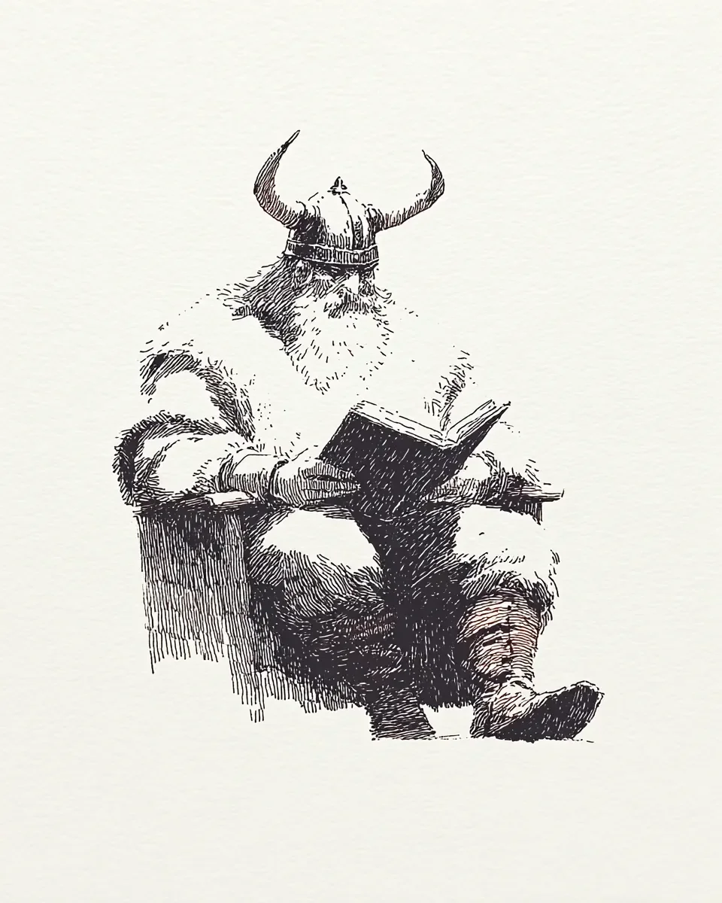

도서관 사서가 내 뿔을 잡았다.
The librarian grabbed my horn.
나는 의자에 앉아 있었다.
I was sitting in a chair.
사서는 조용히 하라고 말했다.
The librarian told me to be quiet.
내 옆의 난장이가 웃었다.
The dwarf next to me laughed.
다른 전사들은 책을 보고 있었다.
The other warriors looked at books.
사서는 내 뿔을 또 만졌다.
The librarian touched my horn again.
나는 조용히 책을 펼쳤다.
I quietly opened my book.